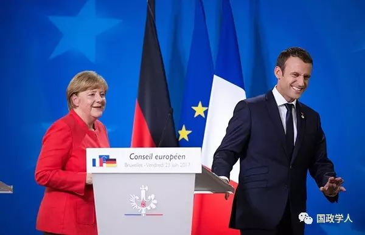

收录于合集

文献来源：澎湃新闻
****
马克龙拉德国搞“欧盟政府”，默克尔说会考虑是真心还是客套

6月20日，默克尔在德国工业协会的年度会议的演讲中表示，自己正在考虑马克龙有关欧盟共同预算制度和欧盟财长的改革方案。
此前，法国新总统马克龙上任后旋即于5月15日访德，与德国总理默克尔就处于危机中的欧洲一体化推销自己的激进一体化深化方案。根据马克龙的计划，欧盟尤其是欧元区国家将形成统一的财政政策，欧盟也将设立一个类似于欧盟财政部长的职位协调负责之。为了实现这一目的，对欧盟条约进行实质修改势在必行。在双边会谈后举行的新闻发布会上，马克龙则澄清了自己无意提出欧元区发行统一债券的方案。马克龙的构想最初在德国颇受冷落。德国自默克尔以降相关官员基本对此持否定态度。然而，上周默克尔态度的转弯使得马克龙构想的欧盟财政一体化方案似乎露出了曙光。
德国要共同货币，不要共同预算 ****
事实上，早在欧元引入之时，德国就对货币一体化及嗣后可能的财政一体化导致的债务平摊（或“债务互助化”）持有相当的疑虑。甫离世的时任总理科尔就多次强调欧元引入绝不意味着欧元区国家的债务平摊。职是之故，欧盟成员国在最初的《马斯特里赫特条约》一方面设立了加入欧元区的国家债务水平等门槛，同时专门设立了“禁止纾困”条款。但这一门槛并未得到认真遵守，大多数欧元区成员国，包括法德等国，都在没有完全达到相关门槛的情况下加入了欧元区。欧盟在1995年所制定的设置成员国预算赤字上限的《稳定与增长公约》也遭到了同样的冷落与违背。
自《马斯特里赫特条约》以降至目前的《里斯本条约》都对欧盟的治理做出了货币政策与财政政策两分的制度安排模式。各成员国的货币政策权力统一让渡给欧盟，由欧洲央行独享；至于包括财政预算政策的经济治理权能则仍然保留在各个成员国手中。欧盟和成员国领导人中的主流观点认为，货币政策应当独立出来，交由一个不受政治力量影响的独立官僚机构负责以做出客观而有利于欧盟长期利益的专业决策；财政预算政策由于其带有高度社会财富再分配性质而应当保留给各成员国的民选政府制定之。
然而，这一二分法在欧债危机爆发后欧盟基于纾困之目的而制定的一系列政策中被侵蚀，无论是欧盟成员国在欧盟法律框架之外所制定的“欧洲稳定机制”（ESM）还是在欧盟之内由欧洲央行所推行的“直接货币交易计划”（OMT）都被质疑欧盟机构相关行动已经超出了欧盟的法定权限而涉入到分属成员国权限的财政预算政策范畴，从而对构成成员国议会权力核心的预算权构成了侵害。虽然欧洲法院和德国联邦宪法法院在相应的诉讼中对上述计划做出了“合法、放行”的判决，但也指出了其中存在的违法违宪问题而设定条件限制之。
欧盟财长与预算一体化实现的难度
在许多人看来，欧债危机的爆发证明欧盟现行的货币经济联盟模式由于货币一体化与财政政策的多样性之间无法实现兼容而归于失败。因此，为了挽救货币联盟并推进一体化，协调各国财政政策并实现财政预算一体化是下阶段一体化的必走之路。事实上，欧盟所推行的纾困计划，包括财政契约、欧洲学期（European
Semester）等措施已经强化了欧元区成员国之间的财政纪律和协调。
马克龙提出的预算一体化与欧盟财长制度则是上述措施的进阶版。 一旦实现，欧盟将由现在的“欧盟治理”（EU Governance）正式迈向财政联邦主义模式的“欧盟政府”（European Government）， 各国预算的最终决定权将实质性地由成员国议会手中转移到欧元区机构（包括马克龙构想中的“欧元区议会”）手中，由欧洲央行的“直接货币交易计划”（OMT）所开启的事实上的欧元区范围内的社会财富再分配将藉此实现制度化。然而，在通向财政联邦主义的道路上，马克龙及欧盟需要首先解决至少两个问题。
第一个问题是欧盟条约的修改问题。 尽管欧洲法院和德国联邦宪法法院等成员国司法机关已经通过解释，尽可能地为欧盟纾困行动在现行条约与宪法框架内找到了法律依据。然而，如果欧盟要建立马克龙所提议的欧元区预算一体化与设立欧盟财长职位，修改并批准新的联盟条约必不可少。由于新的条约须得到成员国全体一致同意方可生效，27个成员国（且不算行将退盟的英国）中任何一国都将拥有否决权。在此过程中，成员国政府的态度与以全民公决的方式进行批准程序的成员国民意（未必与政府一致，如法国和荷兰人民在全民公决中否决了《欧宪条约》）都将使得各方就新条约内容达成一致并获得批准的过程困难重重。尤其是，在目前局势下，新的实质性修约议程很可能挑动欧盟内部业已存在的矛盾与分歧：中北欧成员国很可能由于货币财政一体化内容激化彼此之间的对立，由于难民问题而矛盾表面化的东西欧对立也可能由于批准条约的表决或公决而火上浇油。
此外， 已经呈现双速或多速发展的欧盟内部集团分化可能由于欧元区继续深化财政一体化的单兵突进而使得欧元区国家与非欧元区国家之间愈行愈远，乃至分化为两个相对独立的成员国集团，从而对欧盟治理与欧盟法律制度的统一性造成严重损害。 例如，如果依照马克龙的提议成立“欧元区议会”，该议会与既有的欧洲议会之间的权限范围、决定效力范围与权力位阶等问题应当如何处理？
第二个问题是，即便新条约获得各国政府与民众支持，它仍然有可能由于侵害了各国宪法秩序而有违宪之虞。 以德国为例，联邦宪法法院在有关德国签署《里斯本条约》的诉讼中已经指出，《里斯本条约》中规定的国家主权让渡已经接近德国宪法所能允许的边缘。联邦宪法法院另外在欧洲央行“直接货币交易计划”的判决中指出，根据德国《基本法》的民主原则，只有德国联邦议会有权决定德国的预算问题。任何侵害乃至剥夺联邦议会的制度安排都构成对上述原则的违反。如果依照马克龙的设想而实现欧元区预算一体化并设立欧元区议会，事实上等于德国联邦议会失去了预算权力而只能对欧元区预算进行背书和确认；依照德国联邦宪法法院对前述案件的判决意见，这一对联邦议会核心权力的侵害和剥夺构成对《基本法》中永远不可修改的民主原则的违反。因此，除非在马克龙提议的预算一体化制度下德国联邦议会继续保有对本国预算的最终决定权，否则德国将只有制定新宪法一途才可能实现预算最终决定权让渡到欧盟的结果。如果这样，由于各成员国议会仍然握有本国预算的最终决定权而使得预算一体化基本上只具有象征意义。而各国修改宪法的可能性则无限接近于零。
无处安放的一厢情愿？
综上，亲欧派马克龙提出的推进欧元区财政一体化和设立欧元区财长的欧盟改革方案面临着现实政治面和法律面的巨大困难。
在政治面，富裕成员国如德国等看不到接受债务平摊的现实可能性，强力推进欧元区财政一体化可能非但不能解决欧盟内部的分歧和危机，反而可能激化欧盟内部业已存在的矛盾，造成欧盟进一步的分裂和离心离德。
从法律面，无论是条约修改、条约批准都面临着巨大的挑战，更可能引发欧盟法律和成员国宪法秩序的直接冲突。
因此，默克尔所表达的愿意考虑马克龙的提议，如果不是外交辞令或仅为表达善意与支持，那么她所能接受的应该是在“债务不平摊”与“联邦议会保有预算决定权”的两项前提下的财政一体化议程，这恐怕与马克龙所意图实现的目标相去甚远。
（作者系德国汉堡大学法学博士候选人、海德堡马普所访问学者）

来源：澎湃新闻
筛选：红尘
编辑：鑫辰
声 明
国政学人微信公众平台系非盈利学术平台。建立之初衷是方便广大学人进行学术研究，促进学术的传播和交流，不做任何商业用途。如有任何权利问题，请直接与我们联系。
您可能还会喜欢：
期刊分享 | 国际关系相关专业所有核心期刊免费获取（最新pdf版）